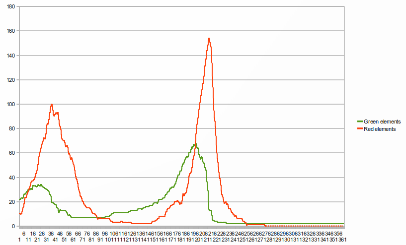

Simulation au niveau de la population : la problématique proies-prédateurs
Équilibre proies-prédateurs avec deux espèces
Quand on laisse une population d'êtres-verts évoluer sans prédateurs, avec juste de l'eau, on a déjà un modèle proies-prédateurs similaire au modèle de Lotka-Volterra à ceci près que la composante positive de la dérivée quantité d'eau est constante.
L'équation d'évolution d'un système avec des êtres-verts qui se reproduisent et de l'eau s'écrit :
dw/dt=alpha-beta*g
dg/dt=-g*(deta-gamma*w)
Où :
- w est la quantité d'eau disponible
- g est le nombre d'êtres-verts
- alpha est le facteur de pluie
- beta est la vitesse à laquelle les flaques d'eau disparaissent au contact des êtres-verts
- gamma est le facteur de reproduction des êtres-verts
- delta est la vitesse à laquelle les êtres-verts meurent en l'absence d'eau
En réalité l'équation est un peu plus complexe car la vitesse de reproduction ne dépend pas directement de la quantité d'eau, mais dépend par contre du nombre d'êtres-verts au carré.
Cependant, en laissant ce modèle évoluer, on obtient des oscillations semblables à celles du modèle Lotka-Volterra :

Équilibre proies-prédateurs avec trois espèces
Avec trois espèces, il est difficile voire impossible d'obtenir un équilibre. Voici les courbes de l'évolution du nombre d'êtres-verts et d'êtres-rouges au cours du temps durant une simulation avec des êtres-verts, des êtres-rouges et de l'eau (quantité d'eau non représentée) :
